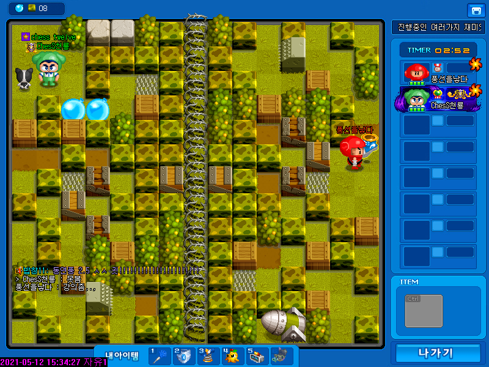

캠프에는 여러가지 기술이 있는데 엇박, 걸치기 등등 초보자가 사용하기 힘든 것들이 많다 
엇박은 고인물중 구현하기 힘든 기술 중 하나이다.
하지만 실전에서 해당 기술을 사용하는 사람들이 많으며 다양한 방법으로 사용한다.여기서 엇박은 걸치기를 기반으로 응요한 기술인데 초보자들은 걸치기를 하는거 자체가 놀라운 상황이고
시도조차가 힘들어 엇박기술을 보기가 힘든 기술입니다.
걸치기가 완벽하게 숙련이 되지 않으면 엇박이 하기 힘들어서 말이죠, 엇박의 원리를 설명하자면
아래에 있는 풍을 놓은 동시에 가시에 풍을 놓는 것입니다.
0.001초만에 풍을 2개 놓았고 보는 시점에서는 빨리 눌러 하나 누른것처럼 보입니다.
하지만 실제로 엇박을 하는 사람들의 감각은 빠르게 눌러 엇박이 성공하는지 실패하는지 죽기전에 눈치챕니다.
어떻게 보면 컴퓨터 렉이 많이 심할수록 엇박의 성공률이 올라가지만 어느정도 걸치기가 깔려있어야 엇박을 성공할수가 있습니다.
O’er all the hilltops
Is quiet now,
In all the treetops
Hearest thou
Hardly a breath;
The birds are asleep in the trees:
Wait, soon like these
Thou too shalt rest.